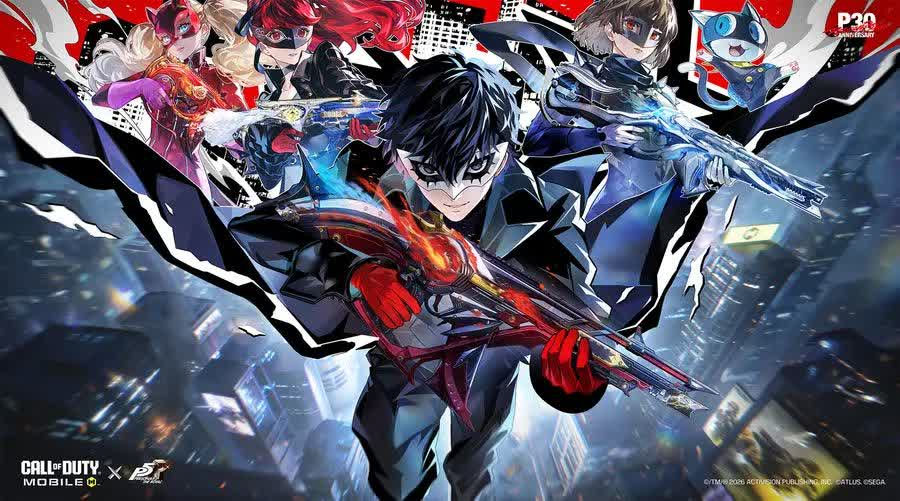
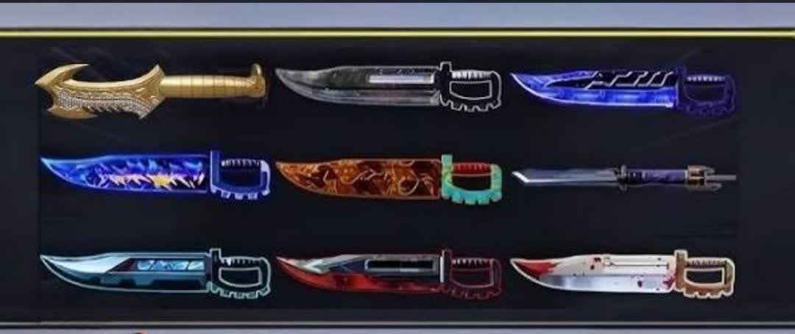

📰 اخبار کالاف

همکاری ترمیناتور ۲ و کالاف دیوتی موبایل بررسی کامل رویداد، اسکین ها، جوایز و زمان انتشار
همکاری ترمیناتور ۲ (Terminator : Judgment Day با کالاف دیوتی موبایل :Call of Duty Mobile) یکی از مورد انتظارترین کراس اوورهای سال محسوب می شود. این همکاری با هدف اضافه کردن شخصیت های افسانه ای اسکین های اختصاصی حالت های محدود رویدادهای ویژه و آیتم های کلکسیونی به بازی طراحی شده و توانسته توجه میلیون ها بازیکن را در سراسر جهان به خود جلب کند. در این مقاله تمامی جزئیات منتشر شده درباره همکاری ترمیناتور ۲ و کالاف دیوتی موبایل را بررسی می کنیم؛ از زمان انتشار گرفته تا شخصیت ها اسکین های لجندری سلاح های اختصاصی رویدادهای محدود جوایز رایگان و تأثیر این همکاری بر آینده بازی همچنین شما می توانید اقدام به خرید سی پی کالاف و بتل پس کالاف کنید تا به شما کمک کند تا بتوانید در کالاف بهترین عملکرد را داشته باشید. همکاری ترمیناتور ۲ با کالاف دیوتی موبایل چیست؟ کالاف دیوتی موبایل طی سال های گذشته همکاری های موفقی با مجموعه های بزرگی مانند Ghost in the Shell. NieR. Attack on Titan. Girls' Frontline و شخصیت های محبوب دنیای بازی و سینما داشته است. اکنون نوبت به یکی از محبوب ترین فیلم های علمی تخیلی تاریخ رسیده است. در این همکاری فضای تاریک و آخرالزمانی فیلم ترمیناتور وارد دنیای کالاف دیوتی موبایل میشود و بازیکنان می توانند با شخصیت های معروف این مجموعه در میدان نبرد حضور پیدا کنند. این رویداد تنها یک بسته اسکین ساده نیست؛ بلکه شامل مجموعه ای از محتواهای جدید خواهد بود که تجربه بازی را کاملاً متفاوت میکند. زمان انتشار همکاری ترمیناتور ۲ و کالاف دیوتی موبایل طبق اطلاعات منتشر شده این همکاری همزمان با یکی از فصل های جدید بازی در دسترس قرار خواهد گرفت. معمولاً اکتیویژن چنین کراس اوورهایی را در ابتدای فصل جدید منتشر می کند تا بازیکنان فرصت کافی برای شرکت در رویدادها داشته باشند. انتظار می رود محتواهای این همکاری شامل موارد زیر باشند آغاز رویداد ویژه عرضه گردونه اختصاصی اضافه شدن باندل های جدید مأموریت های روزانه جوایز رایگان آیتم های محدود زمانی به دبیل محدود بودن مدت رویداد بازیکنان باید بازه زمانی نسبت به دریافت آیتم ها اقدام کنند. شخصیت های قابل انتظار در این همکاری یکی از جذاب ترین بخش های این کراس اوور حضور شخصیت های مشهور فیلم ترمیناتور است. T-۸۰۰ بدون شک مهم ترین شخصیت این همکاری ۸۰۰- خواهد بود؛ همان ربات افسانه ای با ظاهر آرنولد شوارتزنگر ویژگی های احتمالی اسکین طراحی بسیار دقیق . انیمیشن اختصاصی صدای ویژه . افکت های منحصر به فرد حالت ورود اختصاصی Finish Move اختصاصی T-۱۰۰۰ یکی دیگر از شخصیت های احتمالی ۱۰۰۰-T است. این شخصیت به دلیل قابلیت تغییر شکل میتواند یکی از جذاب ترین اپراتورهای بازی باشد. ویژگی های احتمالی افکت مایع فلزی انیمیشن ویژه . ظاهر كاملاً سینمایی . اجرای اختصاصی هنگام حذف دشمن سارا كانر یکی از محبوب ترین شخصیت های فیلم نیز احتمالاً به بازی اضافه خواهد شد. اسکین سارا کانر میتواند شامل موارد زیر باشد لباس کلاسیک فیلم اسلحه اختصاصی کوله ویژه . ایموت انحصاری جان کانر رهبر مقاومت انسان ها نیز از شخصیت هایی است که بسیاری از بازیکنان انتظار حضور او را دارند. گردونه اختصاصی ترمیناتور ۲ تقریباً تمامی همکاری های بزرگ کالاف دیوتی موبایل دارای Lucky Draw اختصاصی هستند. در این گردونه معمولاً آیتم های زیر وجود دارد اپراتور لجندری سلاح لجندری Charm Avatar Calling Card Wingsuit Backpack Vehicle Skin Grenade Skin Frame احتمال دارد گردونه این همکاری نیز از همین ساختار استفاده کند. باندل ویژه ترمیناتور ۲ علاوه بر گردونه احتمال عرضه Bundle نیز وجود دارد. این بسته ها معمولاً شامل موارد زیر هستند اسکین اپراتور Blueprint اسپری ايموت کارت بازیکن قاب پروفایل جوایز رایگان همکاری ترمیناتور ۲ همیشه بخشی از همکاری های کالاف دیوتی موبایل به صورت رایگان ارائه میشود. بازیکنان احتمالاً میتوانند آیتم های زیر را دریافت کنند اسکین رایگان Calling Card Avatar Battle Pass XP Weapon XP Credits Camo Sticker برای دریافت این جوایز کافی است مأموریت های روزانه یا هفتگی رویداد را تکمیل کنید. طراحی محیط بازی همکاری های بزرگ معمولاً تغییراتی در محیط بازی ایجاد میکنند. ممکن است شاهد موارد زیر باشیم آسمان آخرالزمانی نورپردازی قرمز انفجارهای بزرگ ربات های نابود شده ماشین آلات آینده جلوه های سینمایی تم بتل پس X nikogem.com در صورت هم زمانی این همکاری با فصل جدید احتمال دارد تم کلی Battle Pass نیز از فضای ترمیناتور الهام گرفته باشد. ویژگی های احتمالی اپراتورهای آینده سلاح های رباتیک اسکین خودرو یا راشوت جدید Frame Avatar ایموت های جدید nikogem.com X ایموت ها بخش جدایی ناپذیر هر کراس اوور هستند. احتمال عرضه ایموت هایی مانند . حرکت معروف ۸۰۰-T ژست مبارزه ورود سینمایی پایان مسابقه وجود دارد. وسایل نقلیه اختصاصی یکی دیگر از آیتم های مورد انتظار اسکین وسایل نقلیه است. احتمال عرضه اسکین برای Motorcycle ATV• Helicopter Tank تأثیر این همکاری بر آینده کالاف دیوتی موبایل همکاری با مجموعه ای مانند ترمیناتور نشان می دهد که توسعه دهندگان همچنان قصد دارند محتوای متفاوت و هیجان انگیزی را به بازی اضافه کنند. چنین رویدادهایی معمولاً باعث افزایش فعالیت بازیکنان بازگشت کاربران قدیمی و جذب مخاطبان جدید می شوند. همچنین موفقیت این کراس اوور میتواند زمینه ساز همکاری های بزرگتر با دیگر فیلم ها و مجموعه های محبوب در آینده باشد. جمع بندی هیجان انگیزترین رویدادهای این بازی به شمار همکاری ترمیناتور ۲ و کالاف دیوتی موبایل یکی از میرود و می تواند با اضافه کردن شخصیت های افسانه ای مانند ۸۰۰- و ۱۰۰۰- اسکین های لجندری سلاح های اختصاصی گردونه ویژه باندل های محدود مأموریت های اختصاصی و جوایز رایگان تجربه ای متفاوت را برای بازیکنان رقم بزند. اگر این همکاری مطابق انتظارات منتشر شود بدون تردید به یکی از ماندگارترین کراس اوورهای تاریخ کالاف دیوتی موبایل تبدیل خواهد شد.

بررسی کامل بتل پس فصل ۶ کالاف دیوتی موبایل جولای ۲۰۲۶ | تمام جوایز اسکین ها اپراتورها و ارزش خرید
هر فصل جدید کالاف دیوتی موبایل تنها یک به روز رسانی ساده نیست؛ بلکه مجموعه ای از محتوای تازه اسکین های منحصر به فرد بلو پرینت های جذاب اپراتورهای جدید و آیتم های تزئینی را در اختیار بازیکنان قرار می دهد. به همین دلیل با آغاز فصل ۶ کالاف دیوتی موبایل در جولای ۲۰۲۶ یکی از مهم ترین پرسش های کاربران این است که آیا خرید بتل پس این فصل ارزش سرمایه گذاری دارد یا خیر. همچنین حضور بلوپرینت های جدید برای در نگاه اول محتوای این فصل نسبت به چند سیزن گذشته تنوع بیشتری دارد. طراحی اسکین ها از حالت نظامی کلاسیک فاصله گرفته و به سمت سبک آینده نگر نئونی و مکانیزه حرکت کرده است. اسلحه های محبوب اپراتورهای متفاوت و یک اسکیت پرستیژ جذاب باعث شده بسیاری از بازیکنان س را یکی از بهترین Battle Pass های سال بداند.

راهنمای فعالسازی دارک اسکوپ در کالاف موبایل
بازی Call of Duty Mobile یکی از محبوب ترین بازی های شوتر موبایلی در جهان است که میلیون ها بازیکن روزانه در آن رقابت میکنند. یکی از قابلیت هایی که در سال های اخیر توجه بسیاری از بازیکنان حرفه ای را جلب کرده دارک اسکوپ (Dark Scope) است. بسیاری از گیمرها معتقدند که فعال کردن دارک اسکوپ می تواند دید بهتری در هنگام نشانه گیری ایجاد کرده و عملکرد بازیکن را در نبردهای رقابتی افزایش دهد. در این راهنمای جامع تمامی مراحل فعالسازی دارک اسکوپ در کالاف موبایل، مزايا، تنظیمات پیشنهادی و نکات حرفه ای استفاده از آن را بررسی می کنیم خرید سی پی کالاف و بتل پس کالاف از سایت نیکوجم به شما کمک میکند تا بتوانید در کالاف بهتر عمل کنید و پیروز میداس باشید. دارک اسکوپ در کالاف موبایل چیست؟ Scope گفته می شود. دارک اسکوپ (Dark Scope) یکی از تکنیک های حرفه ای اسنایپ در کالاف دیوتی موبایل است که بسیاری از بازیکنان حرفه ای و یوتیوبرهای COD Mobile از آن استفاده میکنند. در این روش بازیکن قبل از اینکه تصویر کامل داخل اسکوپ نمایش داده شود، شلیک خود را انجام می دهد. به همین دلیل هنگام تیراندازی محیط داخل اسکوپ تاریک یا نیمه تاریک دیده میشود و اصطلاحاً به آن Dark این تکنیک باعث میشود زمان هدف گیری کاهش پیدا کند و بازیکن بتواند سریع تر از حریف شلیک کند. دارک اسکوپ شباهت زیادی به Quick Scope دارد اما زمان شلیک در آن حتی سریع تر است. در سال ای اخیر استفاده از دارک اسکوپ به یکی از مهارت های محبوب میان اسناییرهای حرفه ای کالاف بایل تبدیل شده و بسیاری از بازیکنان برای افری سرعت واکنش خود به دنبال فعال سازی ویادگیری این تکنیک هستند. آیا دارک اسکوپ یک تنظیم رسمی در بازی است؟ یکی از سوالات رایج کاربران این است که آیا گزینه ای به نام Dark Scope در تنظیمات بازی وجود دارد؟ پاسخ خیر است. در واقع دارک اسکوپ یک قابلیت مستقل نیست؛ بلکه نتیجه ترکیب صحیح تنظیمات ADS حساسیت اسکوپ FOV و نحوه هدف گیری بازیکن محسوب می شود. به همین دلیل برای فعال کردن دارک اسکوپ باید برخی تنظیمات مهم بازی را تغییر دهید. همچنین به شما دوستداران باز یکالاف دیوتی موبایل پیشنهاد میکنیم حتما مقاله اسکین کاراکترهای سیزن ۶ کالاف موبایل لو رفت را در نيكوجم مطالعه نمایید تا اطلاعات بیشتری درباره این سیزن جمع آوری کنید. مزایای فعال کردن دارک اسکوپ در کالاف موبایل در مودهای رقابتی مانند Ranked Multiplayer سرعت واکنش اهمیت بسیار زیادی دارد. افزایش سرعت شلیک کاهش زمان ADS برتری در دوئل های اسنایپ . افزایش احتمال گرفتن First Shot مناسب برای Quick Scope حرفه ای . عملکرد بهتر در نقشه های کوچک بازیکنان حرفه ای معمولاً از دارک اسکوپ برای درگیری های نزدیک و متوسط استفاده میکنند؛ جایی که حتی چند صدم ثانیه میتواند نتیجه نبرد را تغییر دهد. آموزش فعالسازی دارک اسکوپ در کالاف دیوتی موبایل برای دستیابی به حالت Dark Scope باید چند بخش مهم از تنظیمات بازی را تغییر دهید. مرحله اول فعال کردن Aim Assist ابتدا وارد بخش تنظیمات شوید. مسیر Settings > Basic > Aim Assist گزینه Aim Assist را فعال کنید. فعال بودن Am Assist باعث میشود هنگام باز شدن اسکوپ هدف گیری سریع تر و دقیق تر انجام شود. این موضوع برای دارک اسکوپ اهمیت زیادی دارد. مرحله دوم تنظیم ADS Sensitivity ADS مهم ترین بخش برای دارک اسکوپ است. مسیر Settings > Sensitivity > ADS Sensitivity برای اسنایپرها بهتر است حساسیت را در محدوده ای تنظیم کنید که بتوانید سريع روی هدف قفل شوید اما کنترل اسکوپ را از دست ندهید. تنظیم صحیح ADS باعث می شود سرعت حرکت اسکوپ هنگام باز شدن افزایش پیدا کند. مرحله سوم فعال کردن Sync ADS FOV to Scope Zoom یکی از مهم ترین تنظیمات معرفی شده برای بهینه سازی عملکرد اسکوپ در کالاف دیوتی موبایل گزینه Sync ADS FOV to Scope Zoom است. مسیر Settings > Basic سپس گزینه: Sync ADS FOV to Scope Zoom را فعال کنید. این تنظیم باعث میشود تغییرات میدان دید (FOV) هنگام باز شدن اسکوپ طبیعی تر باشد و کنترل بهتری روی هدف داشته باشید مرحله چهارم تنظیم FOV FOV یا Field Of View نقش مهمی در اجرای دارک اسکوپ دارد. مسیر Settings > Graphics بازه پیشنهادی ۸۰ تا ۱۰۰ افزایش FOV باعث می شود محیط بیشتری را مشاهده کنید و دشمنان را سریع تر تشخیص دهید. بسیاری از اسناییرهای حرفه ای از FOV بالا برای Quick Scope و Dark Scope استفاده میکنند. مرحله پنجم حذف افکت های اضافی برای داشتن دید بهتر هنگام اسکوپ گرفتن بهتر است برخی افکت های گرافیکی را کاهش دهید. تنظیمات پیشنهادی Blur Effect خاموش Depth Of Field خاموش Bloom : خاموش Motion Blur خاموش این کار باعث افزایش وضوح تصویر و واکنش سریع تر در زمان اسکوپ میشود. بهترین تنظیمات حساسیت برای دارک اسکوپ تنظیمات حساسیت برای هر بازیکن متفاوت است اما به عنوان نقطه شروع میتوانید از مقادیر زیر استفاده کنید Standard Sensitivity ۷۰ تا ۸۵ ADS Sensitivity ۹۰ تا ۱۰۰ Sniper Scope Sensitivity ۵۰ تا ۶۰ Gyroscope ۱۴۰ تا ۱۶۰ این اعداد تنها پایه ای برای شروع هستند و بهتر است در Training Mode شخصی سازی شوند. اشتباهات رایج هنگام استفاده از دارک اسکوپ بسیاری از بازیکنان پس از فعال کردن تنظیمات مناسب همچنان نتیجه مطلوبی نمیگیرند. رایج ترین اشتباهات عبارت اند از حساسیت بیش از حد بالا شلیک زودتر از زمان مناسب استفاده از FOV نامناسب فعال بودن افکت های اضافی تمرین نکردن در Training Mode تغییر مداوم تنظیمات جمع بندی دارک اسکوپ در کالاف دیوتی موبایل یک تکنیک حرفه ای برای افزایش سرعت شلیک اسناییرها محسوب می شود. اگرچه گزینه مستقلی برای فعال کردن Dark Scope در بازی وجود ندارد، اما با تنظیم صحيح ADS Sensitivity فعال کردن Sync ADS FOV to Scope Zoom بهینه سازی FOV و حذف افکت های اضافی میتوانید شرایط لازم برای اجرای این تکنیک را فراهم کنید. در نهایت مهم ترین عامل موف در دارک اسکوپ تمرین مداوم است. هرچه بیشتر در Training de و مسابقات واقعی تمرین کنید زمان بندی شما دقیق تر شده و عملکرد بهتری در قابتی کالاف دیوتی موبایل خواهید داشت

10 Assault Knife رایگان در کالاف موبایل که می توانید دریافت کنید
در بین سلاح های Melee در Call of Duty: Mobile آیتم Assault Knife یکی از محبوب ترین انتخاب ها بین بازیکنان است. سرعت بالا سبک بازی هجومی و کاربرد عالی در درگیری های نزدیک باعث شده این سلاح همیشه در متا یا لودآوت بسیاری از پلیرها حضور داشته باشد. برخلاف تصور بسیاری از بازیکنان برای داشتن Assault Knife همیشه نیازی به خرید COD Points یا شرکت در ucky Draw های پولی نیست. در واقع روش های متنوعی برای دریافت Assault nife رایگان در کالاف دیوتی موبایل وجود دارد که از طریق ایونت ها تورنمنت ها و سیستم یاداش بازی قابل دسترسی هستند. در این مقاله تمام روشهای واقعی و کاربردی برای گرفتن Assault Knife رایگان را بررسی میکنیم خرید سی پی کالاف و بتل پس کالاف به شما کمک میکند سلاح ها و اسکین های جدید در کالاف دریافت کنید و به طور حرفه ایی در این بازی ظاهر شوید.